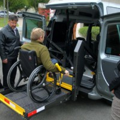

São Caetano do Sul tem primeiros táxis adaptados do ABC
A frota de táxis de São Caetano é a primeira do ABC a contar com veículos adaptados para transporte de cadeirantes. Os dois novos automóveis foram apresentados ontem (15), durante assinatura da autorização de trabalho no município, que contou com a presença do prefeito José Auricchio Júnior; do secretário de Mobilidade Urbana, Iliomar Darronqui; da secretária dos Direitos da Pessoa com Deficiência ou Mobilidade Reduzida, Lílian Fernandes; além dos dois taxistas, o casal José Eduardo e Cíntia Soares.
“Fizemos uma pesquisa entre os taxistas da cidade para identificar quem tinha interesse em atender esse segmento. O José Eduardo e a Cíntia, que já trabalhavam com transporte de pessoas com mobilidade reduzida, abraçaram a causa e adquiriram os dois veículos”, declarou Darronqui.
Para o secretário da Semob, a novidade vai facilitar a vida de deficientes físicos e pessoas com mobilidade reduzida, garantindo conforto e resgate de cidadania para esses cidadãos. “O transporte público já oferece essa opção, mas quem preferir utilizar táxis terá todos seus direitos resguardados”, completou Darronqui. Dados de 2010 apontavam que a frota de táxis na cidade contava com 264 vaículos. No ABC, são 1.394.
Cadeira de rodas - Segundo o taxista, todas as pessoas podem, um dia, precisar de uma cadeira de rodas. “Seja por velhice, acidente ou doença. Estamos todos sujeitos”, pontuou. Cada veículo transporta, além do cadeirante, mais duas pessoas. Todos os motoristas passaram por curso de qualificação para operar o equipamento e atender os cadeirantes.
“Já ouvi motorista perguntar se eu também ia levar a cadeira”, afirmou o funcionário público Luis Kassab, cadeirante desde criança. “Testei os novos táxis e estão aprovados. São muito seguros. É uma grande conquista para todos os cadeirantes”, declarou.
A tarifa das corridas dos táxis adaptados é a mesma dos veículos convencionais. Um dos carros vai ficar no ponto do Terminal Nicolau Delic (rua Serafim Constantino, s/nº, Centro) e outro na rua Aurélia, próximo ao pronto socorro municipal. A central de radiotáxi atende no número 2759-2880, de segundaa sexta das 7h às 21 horas e aos fins de semana e feriados das 8h às 18 horas. Viagens fora desse horário podem ser agendadas com antecedência, por telefone ou pelo site www.centraldassolucoes.com.br. Os veículos também atendem passageiros que não possuem necessidades especiais.
Fonte Diário Regional.